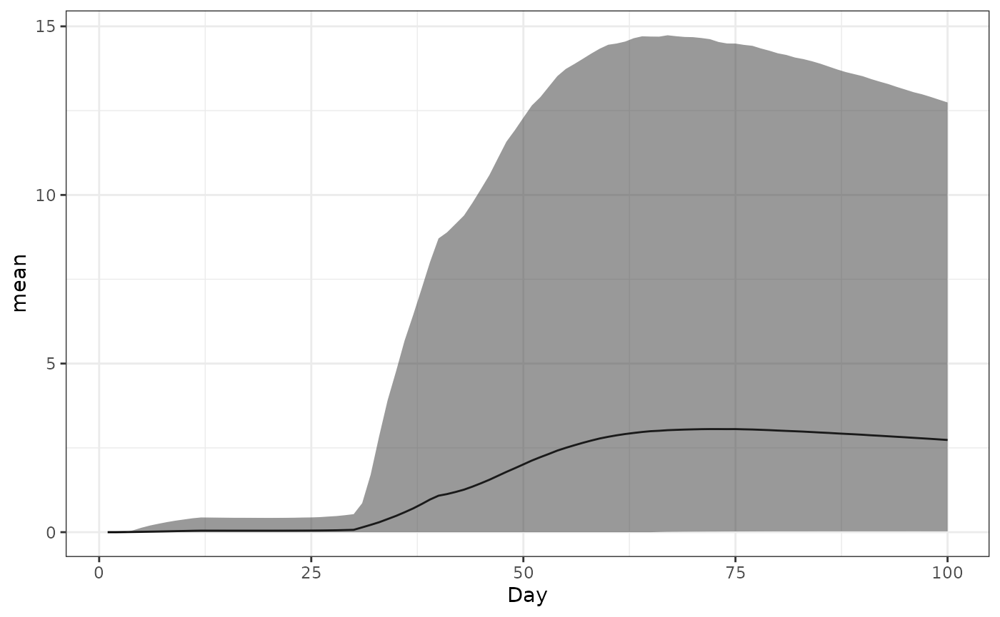
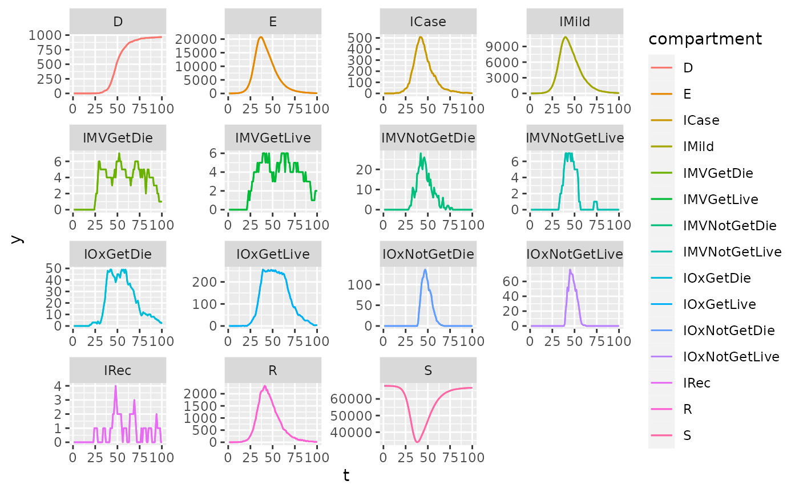
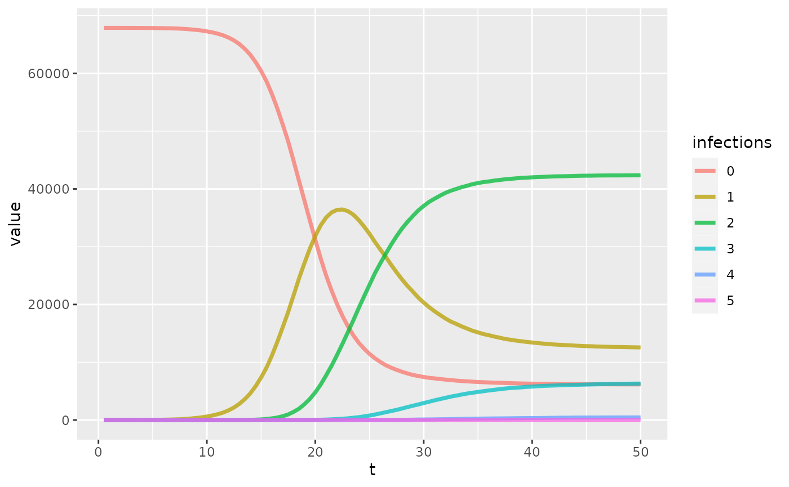

library(safir)
library(individual)
library(nimue)
#>
#> Attaching package: 'nimue'
#> The following object is masked from 'package:base':
#>
#> format
library(data.table)
library(ggplot2)Setup
This vignette is essentially identical to the one titled “Vaccine model with multiple doses”, but includes options for modeling immune response mechanistically (a boost to antibody titre as the result of natural infection) as opposed to with an R compartment within which agents are 100% immune for re-infection. The only thing that needs to be added to the parameters list is parameters$mu_ab_infection, giving the antibody boost derived from each natural infection. It is a vector where the 1st element is the antibody boost from someone’s first infection, 2nd from someone’s second subsequent infection, and so on. If an individual is getting reinfected a number of times greater than the length of the vector, the last element of the vector is used as their antibody titre associated with that reinfection event.
iso3c <- "GBR"
pop <- safir::get_population(iso3c)
pop$n <- as.integer(pop$n / 1e3)
contact_mat <- squire::get_mixing_matrix(iso3c = iso3c)
tmax <- 100
dt <- 0.5
R0 <- 4
# vaccine dosing
vaccine_doses <- 2
dose_period <- c(NaN, 28)
vaccine_set <- c(0, seq(from = 1e3, to = 1e4, length.out = tmax-1))
vaccine_set <- floor(vaccine_set)
# vaccine strategy
vaccine_coverage_mat <- nimue::strategy_matrix(strategy = "Elderly",max_coverage = 0.2)
next_dose_priority <- matrix(data = 0, nrow = vaccine_doses - 1,ncol = ncol(vaccine_coverage_mat))
next_dose_priority[1, 15:17] <- 1 # prioritize 3 oldest age groups for next dose
# base parameters
parameters <- safir::get_parameters(
population = pop$n,
contact_matrix_set = contact_mat,
iso3c = iso3c,
R0 = R0,
time_period = tmax,
dt = dt
)
# vaccine parameters
ab_parameters <- get_vaccine_ab_titre_parameters(vaccine = "Pfizer", max_dose = vaccine_doses,correlated = FALSE)
# combine parameters and verify
parameters <- make_vaccine_parameters(
safir_parameters = parameters,
vaccine_ab_parameters = ab_parameters,
vaccine_set = vaccine_set,
dose_period = dose_period,
strategy_matrix = vaccine_coverage_mat,
next_dose_priority_matrix = next_dose_priority
)
# ab boost for each infection
parameters$mu_ab_infection <- ab_parameters$mu_abRun safir
This part is also exactly the same as the “Vaccine model with multiple doses” except the following places:
-
create_natural_immunity_variablesis called to attach additional variables to thevariableslist needed to model multiple infections -
attach_event_listeners_natural_immunityis called to add additional event listeners toeventslist needd to antibody boosting. Please note there is an argumentadditivewhich can be used to change how antibody boosting from infection interacts with existing antibody titre levels, so please carefully read the documentation forattach_event_listeners_natural_immunity() - We use another render object,
inf_rendererwhich will plot the number of cumulative infections the population has. Rendering adds more computation, increasing model run time, so for actual use, please don’t add this and its associated process functioninteger_count_render_process_dailyunless you are interested in tracking this information. -
natural_immunity_ab_titre_processis added to theprocesseslist to update antibody titre from vaccines or natural immunity (replacesvaccine_ab_titre_process).
As usual, for actual use, please use only the minimum number of output/rendering needed for your analysis, as it increases run time. In particular, double_count_render_process_daily to output the antibody titre for each person each day is time consuming.
# create variables
timesteps <- parameters$time_period/dt
variables <- create_variables(pop = pop, parameters = parameters)
variables <- create_vaccine_variables(variables = variables,parameters = parameters)
variables <- create_natural_immunity_variables(variables = variables, parameters = parameters)
# create events
events <- create_events(parameters = parameters)
events <- create_events_vaccination(events = events,parameters = parameters)
attach_event_listeners(variables = variables,events = events,parameters = parameters, dt = dt)
attach_event_listeners_vaccination(variables = variables,events = events,parameters = parameters,dt = dt)
attach_event_listeners_natural_immunity(variables = variables, events = events, parameters = parameters, dt = dt)
# make renderers
renderer <- Render$new(parameters$time_period)
nat_renderer <- Render$new(parameters$time_period)
dose_renderer <- Render$new(parameters$time_period)
double_count_render_process_daily <- function(renderer, variable, dt) {
stopifnot(inherits(variable, "DoubleVariable"))
stopifnot(inherits(renderer, "Render"))
function(t) {
if ((t * dt) %% 1 == 0) {
day <- as.integer(t * dt)
nat <- exp(variable$get_values())
quantiles <- quantile(x = nat, probs = c(0.025, 0.5, 0.975))
renderer$render(name = "q025", value = quantiles[[1]], timestep = day)
renderer$render(name = "q5", value = quantiles[[2]], timestep = day)
renderer$render(name = "q975", value = quantiles[[3]], timestep = day)
renderer$render(name = "mean", value = mean(x = nat), timestep = day)
}
}
}
inf_renderer <- Render$new(parameters$time_period)
# processes
processes <- list(
natural_immunity_ab_titre_process(parameters = parameters,variables = variables, dt = dt),
vaccination_process(parameters = parameters,variables = variables,events = events,dt = dt),
infection_process_vaccine_cpp(parameters = parameters,variables = variables,events = events,dt = dt),
categorical_count_renderer_process_daily(renderer = renderer,variable = variables$states,categories = variables$states$get_categories(),dt = dt),
double_count_render_process_daily(renderer = nat_renderer, variable = variables$ab_titre, dt = dt),
integer_count_render_process_daily(renderer = dose_renderer,variable = variables$dose_num,margin = 0:vaccine_doses,dt = dt),
integer_count_render_process_daily(renderer = inf_renderer,variable = variables$inf_num,margin = 0:51,dt = dt)
)
setup_events(parameters = parameters,events = events,variables = variables,dt = dt)Run the simulation.
system.time(simulation_loop_safir(
variables = variables,
events = events,
processes = processes,
timesteps = timesteps,
variables_dont_update = c("discrete_age", "phase"),
progress = FALSE
))
#> user system elapsed
#> 20.049 0.077 20.136Plot Results
Antibody titre
This lets us check if people are getting vaccinated; Ab titre, averaged over the population, relative to the time of the first dose. It won’t look like the cohort plots because everybody gets their second dose at slightly different times, depending on availability.
ab_titre_dt <- as.data.table(nat_renderer$to_dataframe())
setnames(ab_titre_dt, "timestep", "Day")
ggplot(data = ab_titre_dt) +
geom_line(aes(x=Day,y=mean)) +
geom_ribbon(aes(x=Day,ymin=q025,ymax=q975),alpha=0.5) +
theme_bw()
Proportion of population with each dose
We also want to plot the number of people with each dose over time to check it’s working.
dose_out <- dose_renderer$to_dataframe()
colnames(dose_out)[2:(vaccine_doses+2)] <- as.character(0:vaccine_doses)
dose_out <- melt(as.data.table(dose_out),id.vars="timestep")
setnames(dose_out, "variable", "dose")
ggplot(data = dose_out) +
geom_line(aes(x=timestep,y=value,color=dose)) +
theme_bw()
Infection states
The compartmental states of the model.
saf_dt <- as.data.table(renderer$to_dataframe())
saf_dt[, IMild_count := IMild_count + IAsymp_count]
saf_dt[, IAsymp_count := NULL]
saf_dt <- melt(saf_dt,id.vars = c("timestep"),variable.name = "name")
saf_dt[, name := gsub("(^)(\\w*)(_count)", "\\2", name)]
setnames(x = saf_dt,old = c("timestep","name","value"),new = c("t","compartment","y"))
ggplot(data = saf_dt, aes(t,y,color = compartment)) +
geom_line() +
geom_line() +
facet_wrap(~compartment, scales = "free")
Cumulative infections
Here we plot how many people in the population have had 0,1,2,… infections.
# infections
inf_out <- inf_renderer$to_dataframe()
inf_out <- inf_out[, -which(sapply(inf_out, function(x){all(x == 0)}, USE.NAMES = FALSE))]
inf_out <- as.data.table(inf_out)
inf_out <- melt(inf_out, id.vars = c("timestep"),variable.name = "infections")
inf_out[, infections := gsub("(^X)(\\w*)(_count)", "\\2", infections)]
inf_out[, t := timestep * dt]
inf_out[, timestep := NULL]
ggplot(data = inf_out, aes(t,value,color = infections)) +
geom_line(size = 1.25, alpha = 0.75)
Code design
The new code is in:
- R/efficacy_naturalimmunity.R: contains
natural_immunity_ab_titre_process,get_time_since_last_dose_or_infection(helper function) - R/events_naturalimmunity.R: contains
attach_event_listeners_natural_immunity - R/variables_naturalimmunity.R: contains
create_natural_immunity_variables